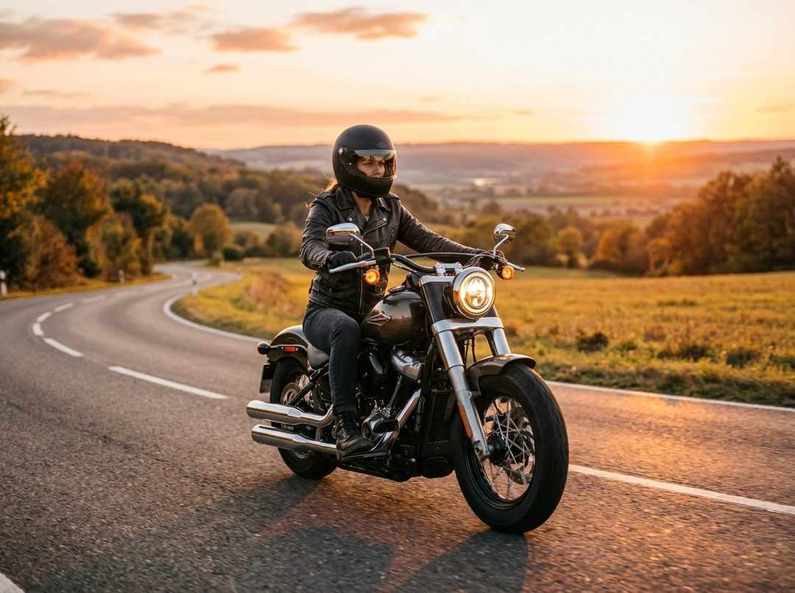

Viele wissen nicht: Eine Cannabis-MPU verlangt nicht in jedem Fall automatisch einen klassischen Abstinenznachweis.
Unter bestimmten Voraussetzungen – abhängig von deiner Konsumgeschichte, einer nachvollziehbaren Verhaltensänderung und einer zuverlässigen Trennung von Konsum und Fahren – kann auch ein anderer Weg in Betracht kommen.
Lass unverbindlich einordnen, welche Möglichkeiten in deinem konkreten Einzelfall realistisch sind.

MPU wegen Cannabis – auch ohne Abstinenznachweis?
Unter bestimmten Voraussetzungen kann das möglich sein.
Meta-Check: Kein Joint, kein Konsum, kein Cannabisblatt. · 4:5 Grafik öffnen ↗